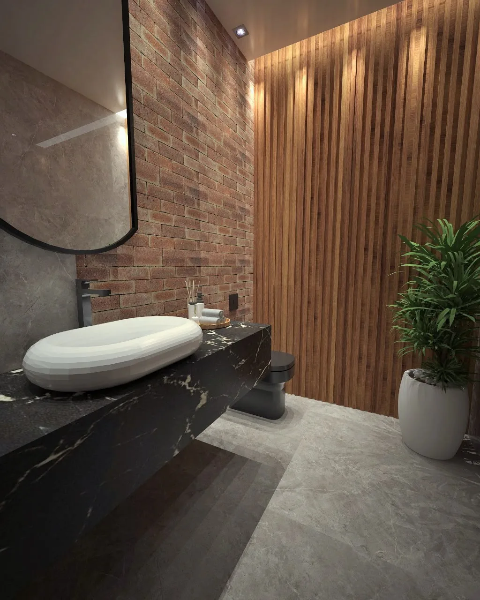
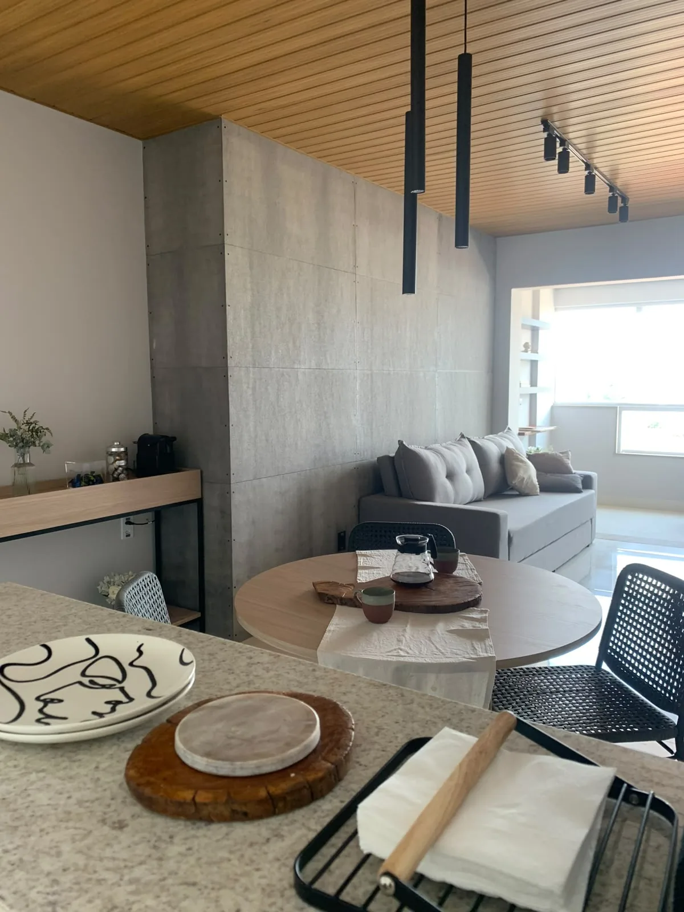
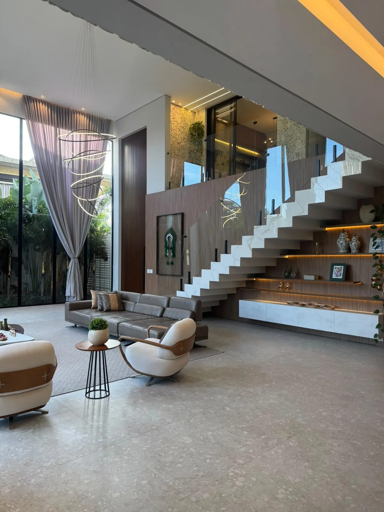
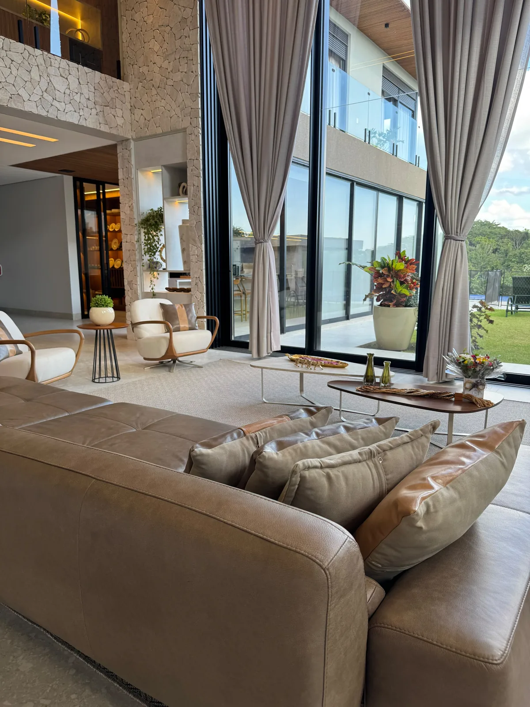
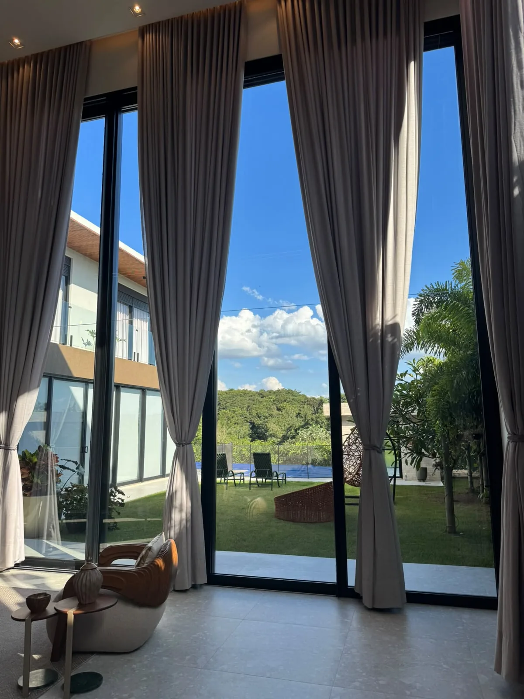
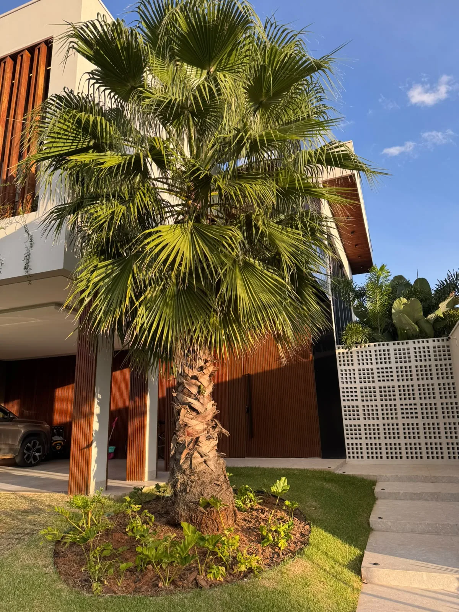
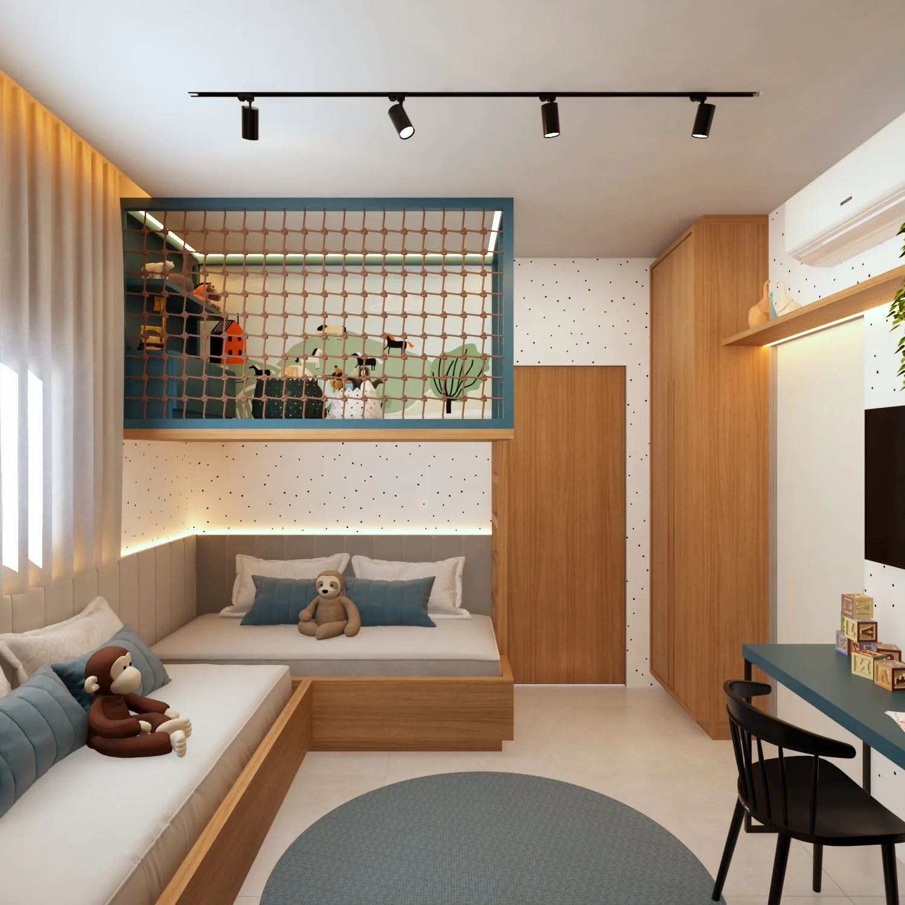
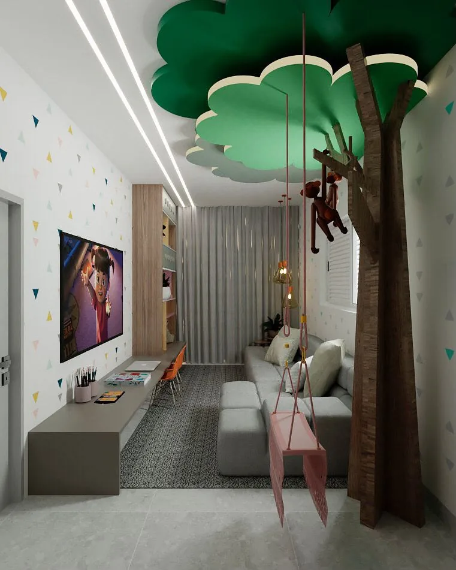
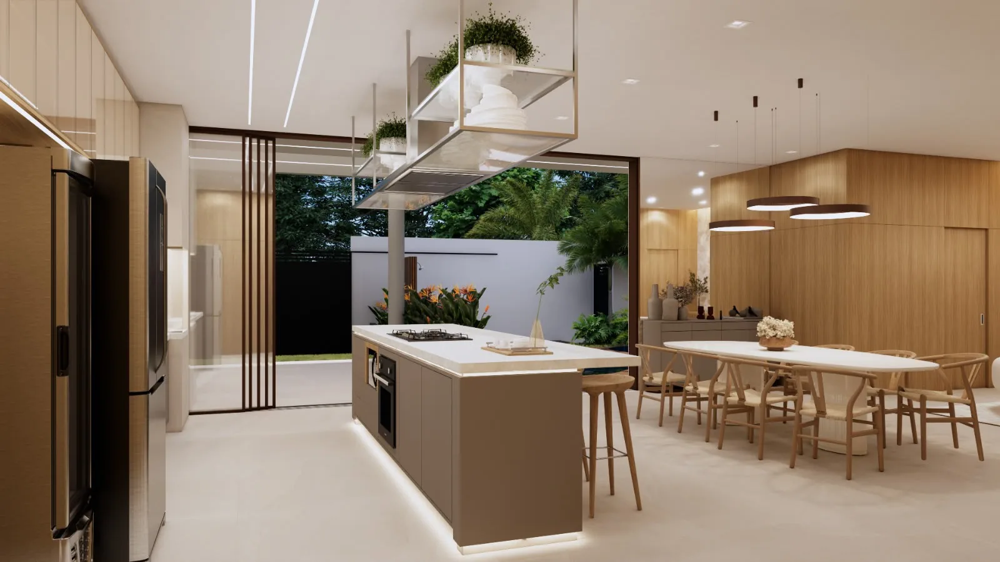
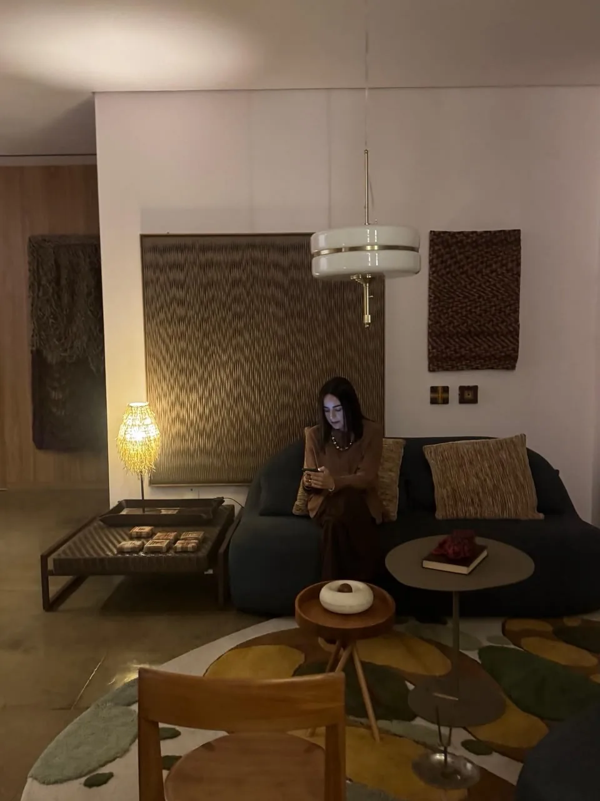

Ver
Observar
Luz natural, proporção e o silêncio que cada ambiente pede antes de qualquer traço.
Greys Carvalho Arquitetura
Transformo espaços em experiências sensoriais que refletem a sua essência e história.
Cada camada revela uma intenção. Antes de criar, observo luz, textura e ritmo. O processo começa no olhar atento.
"Arquitetura é o encontro entre o que sentimos e o que habitamos. Cada projeto nasce de uma escuta profunda."
Ver
Luz natural, proporção e o silêncio que cada ambiente pede antes de qualquer traço.
Criar
Madeira, pedra e tecido escolhidos com cuidado para contar a história de quem vai habitar.
Arquitetar
Espaços que acolhem rotinas, encontros e memórias com elegância discreta e calor humano.
Portfólio
Nove ambientes executados com materiais naturais, luz quente e atenção aos detalhes que transformam rotina em ritual.









Do conceito à entrega das chaves, acompanho cada etapa com presença e cuidado.
01
Plantas, fachadas e volumetria pensadas para o clima, a luz e o modo de vida de cada família.
02
Ambientes que unem conforto, materialidade e identidade. Cada escolha de cor, tecido e mobiliário é intencional.
03
Acompanho cada etapa da construção para que o projeto executado seja fiel ao que sonhamos juntos.

Arquiteta & gestora
Sou arquiteta desde 2015 e acredito que cada projeto é uma conversa íntima entre quem habita e o espaço que o acolhe. Trabalho com residências de alto padrão em Patrocínio e em todo o Brasil.
Minha abordagem une sensibilidade estética e rigor técnico. Da escolha da pedra ao último detalhe da marcenaria, estou presente em cada decisão.
10+
Anos de experiência
100%
Projetos autorais
O que dizem quem já habitou os projetos. Textos placeholder, a substituir pela cliente.
Cada canto da casa parece ter sido pensado para nós. A luz da manhã no living é o meu ritual favorito.
A gestão de obra nos deu tranquilidade. Greys esteve presente em cada etapa com clareza e cuidado.
Os interiores traduzem exatamente quem somos. Materiais nobres sem excesso, conforto em cada detalhe.
Conte sobre o seu projeto. Respondo em até 48 horas com orientações para darmos o primeiro passo juntos.